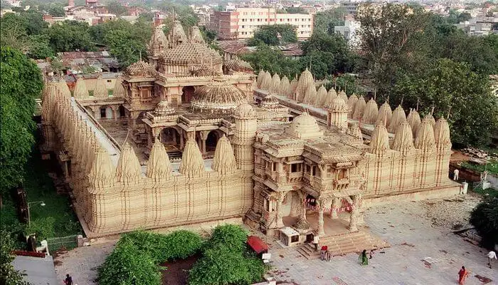

HUTHEESING JAIN TEMPLE
Go Back To Gujarat

- It is Known as one of the best temples in Ahmedabad.
- Hutheesing Temple showcases the beautiful culture of the Jain religion.
- It was built in the 18th century by a prosperous merchant named Seth Hathisingh.
- The temple has entirely been made with white marble, which is known to be holy for the Jain devotees.
- The interior of the temple is filled with beautiful hand carvings, which makes it look very beautiful during the night.
- Along with this, there are also 52 distinctive sub-shrines present here, which are dedicated to numerous Tirthankars, including Dharamanath.
- To relish its actual charm, make sure to visit this temple during Mahavir Jayanti Festival.
- However, before visiting the temple, make sure to wear traditional dresses to avoid any kind of inconvenience.